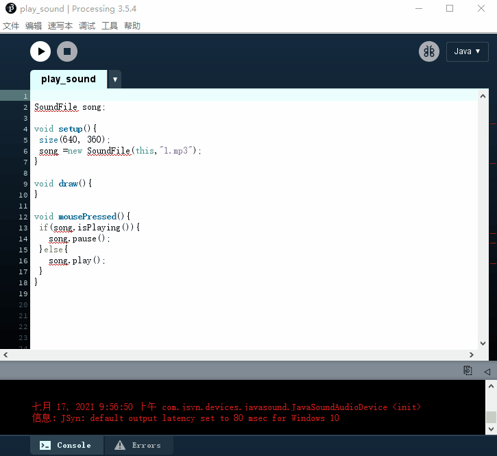
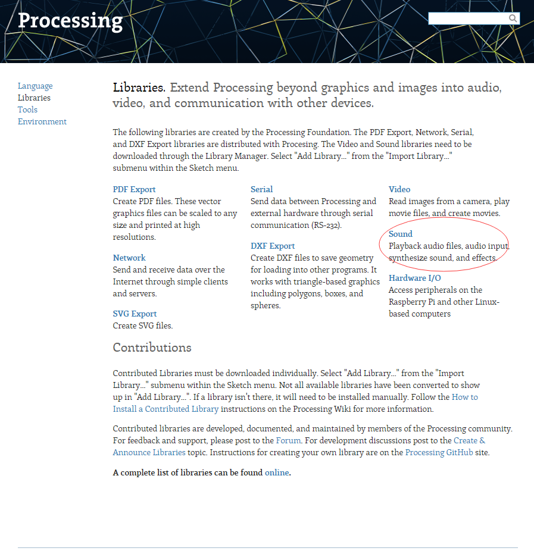

processing-7-声音
本章开始新的内容，主要内容如下
- 声音的播放
- 声音的合成
- 声音的分析
本节主要讲声音播放
1、声音播放基础
代码示例如下：
1 | //引入processing的sound库 |
上面代码中涉及到一个新的库，也就是sound库，下面是教大家如何引用和查看这个库的参考文档

参考文档在

2、调整音量
在上面代码中有一个问题，我们播放的音频声音是恒定的，如果不调整计算机的系统音量或者耳机音响的音量，播放的声音是无法修改的，那么我们能不能手动调节播放声音的音量呢？其实我也不知道，但是我们可以看一下参考文档

找到一个和声音有关的，点进去看一下，文档示例很简单

和我们前面写的代码很相似，照着示例，修改我们代码即可，示例的amp()方法使用的是常量值，我们现在想调整声音，自然要把这个常量改成变量
修改后的代码如下
1 | import processing.sound.*; |
这段代码中使用了一个map()方法，因为由amp()中可以看到
这个方法的参数必须是0到1之间的浮点数，而我们的mouseX的取值范围是0-width，这个map()就是为了使将mouseX的值从0-width映射成0-1，用兴趣的同学可以自己去看一下map()的API
上面代码中，我们可以在画布上左右移动鼠标来动态调整播放音频的声音的大小。
既然都可以调节声音了，可以调整播放速度吗，答案自然是可以的，有兴趣的同学可以去查看参考文档，里面有详细的说明
-------------本文结束感谢您的阅读-------------